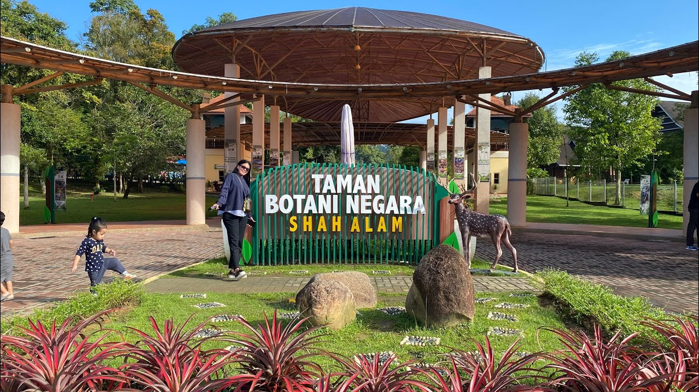
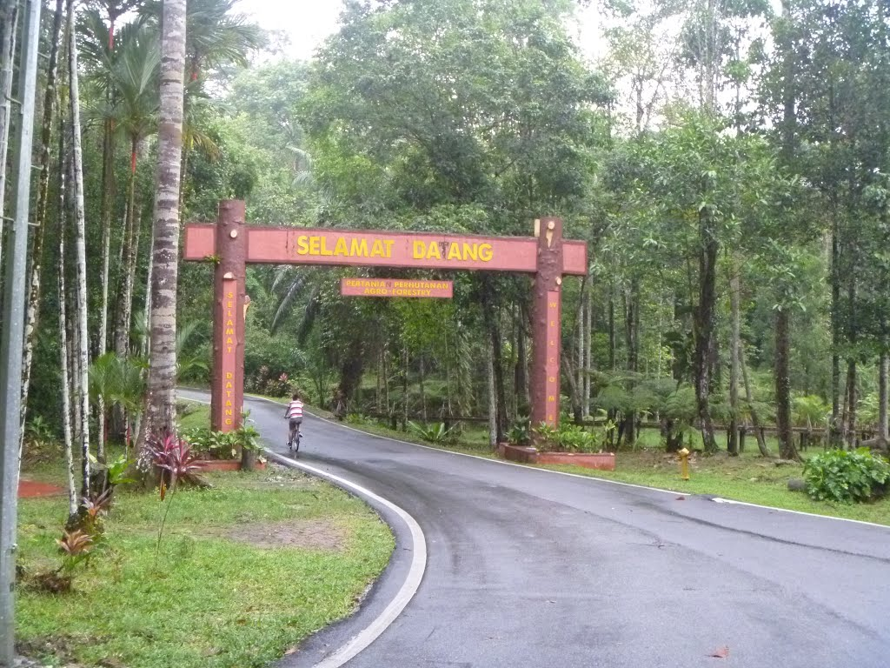
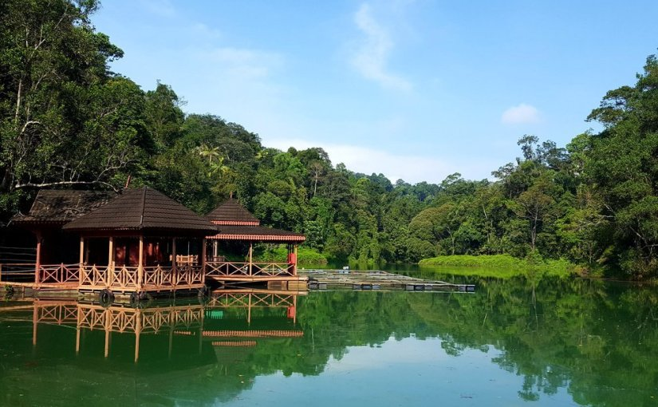
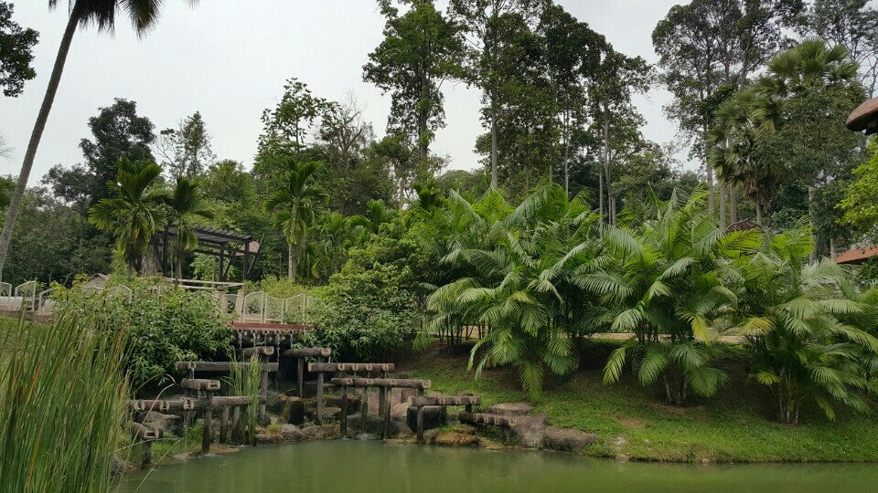
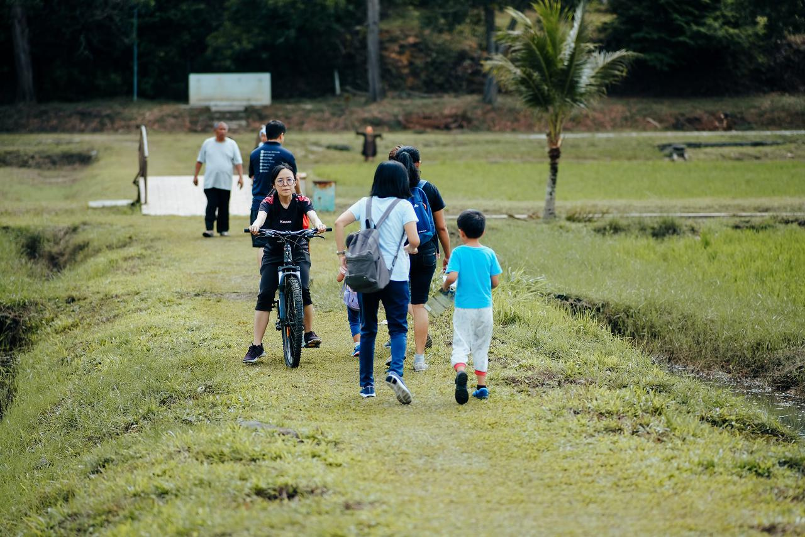

Exploring healing experiences at Taman Botani Negara Shah Alam
A study of Taman Botani Negara Shah Alam

Taman Botani Negara Shah Alam - A green oasis for healing and recreation
This study investigates how recreational activities at the Shah Alam National Botanical Garden contribute to the healing experience of visitors, particularly in addressing stress and mental well-being among urban residents. The objectives of this research were to identify key healing recreational factors and assess visitors' perceptions of the therapeutic elements in physical activities.
of visitors reported feeling more relaxed after visiting
noticed improvement in their mood
said they would visit more often if therapeutic programs were offered
Visitor congestion undermines the therapeutic experience, transforming tranquil spaces into crowded environments.
Litter and neglected facilities reduce the visual value and relaxation potential of the garden.
Restricted access prevents those with mobility impairments from benefiting fully from the park's amenities.
Lack of knowledge about therapeutic recreation and absence of specific programs limit the park's potential.

Serene walking paths

Tranquil water features

Diverse plant collections

Visitors enjoying the space